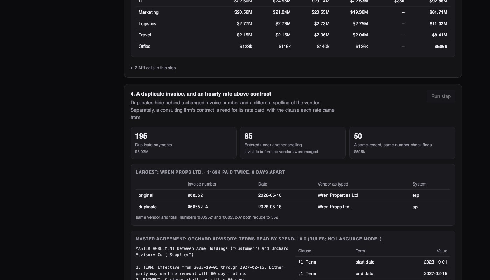
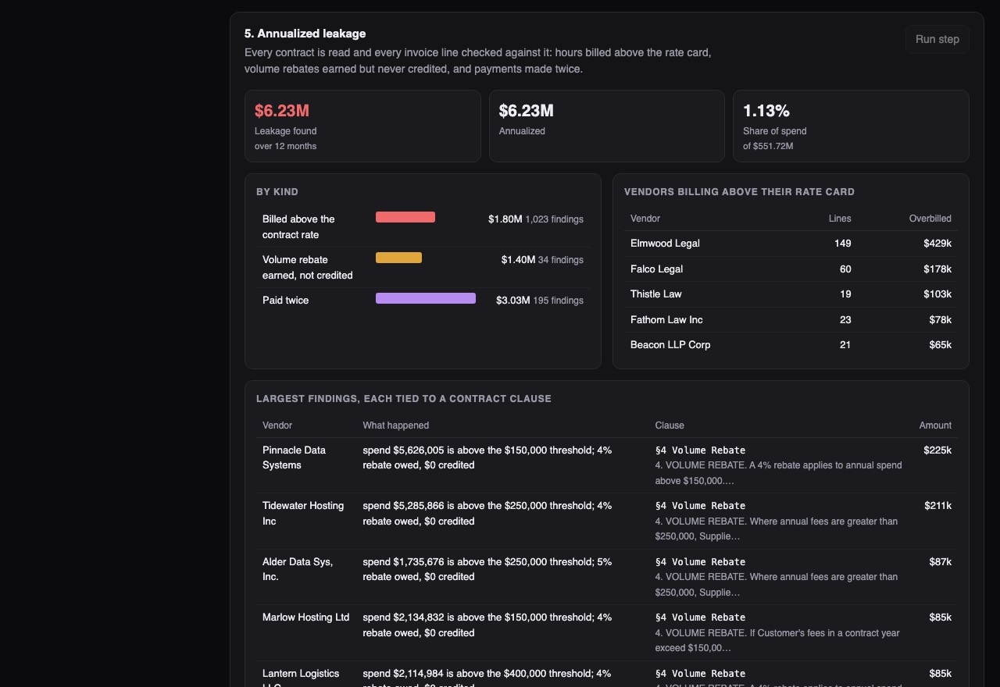

Python · Procurement analytics · 2026-10
Where Is the Money Leaking Out of Accounts Payable?
A spend-analysis system that merges the many spellings of each supplier, catches invoices paid twice, reads contracts for their agreed rates and checks every invoice against them. On an invented company's year of payables it found $6.2M of planted leakage (1.1% of spend), and 195 duplicate payments where the usual check finds 50.

Built from a written blueprint as one vertical slice, on a synthetic ledger: every vendor, invoice and contract is invented and the leakage was planted, so each engine can be checked against a known answer. The data is far more regular than a real ledger (descriptions come from a phrase bank, contracts from three phrasings per clause), which is why some scores are near 100%. No language model is used: contract terms are read with rules. Not built: real ERP connectors, currencies other than dollars, Kafka, Terraform, single sign-on.
01 — The problem
A large company pays tens of thousands of invoices a year through several systems, each with its own vendor list. The same supplier ends up as "Wren Cloud Services Ltd", "WREN CLOUD SVCS LTD." and two more. Nobody can then see total spend with that supplier, an invoice entered twice under two spellings looks like two different bills, and nobody checks the consultant's hourly rate against the contract. Can software clean the vendor list, find what was paid twice or overpaid, and point to the contract clause that proves it?
Blueprint 7 of ten in an enterprise build book, built as the demo scenario end to end.
02 — What I built
A Python service on PostgreSQL with a background worker and a web page, started by one docker compose up.
- Vendor matching: decides which vendor records are the same company, and remembers when a person overrules it.
- Classification: files uncategorized invoice lines into a spend taxonomy.
- Duplicate detection: the same bill paid twice, even with a retyped number.
- Contract reading: rate cards, rebate clauses, renewal dates, each stored with the clause and sentence it came from.
- Leakage check and opportunities: every invoice line against its contract, then a ranked list of what to recover or renegotiate, and a dossier per vendor.
03 — How it was built
- 01
Decide which records are one company
Names are cleaned first: legal endings dropped, abbreviations spelled out. Only records that share a name word, a tax id or a bank account are compared at all. For each such pair a small model weighs five pieces of evidence: shared words, shared letter sequences, and whether tax id, bank account and address agree, are missing, or conflict. A missing detail counts for nothing; a conflicting one counts against. 985 records became 413 companies.
agree = lambda k: 0.0 if not a.get(k) or not b.get(k) else 1.0 if a[k] == b[k] else -1.0 - 02
A duplicate hides behind two small changes
An invoice paid twice rarely has the same number twice. It comes back as "000552-A", or with "INV-" dropped, or a letter O for a zero. So invoice numbers are reduced to their digits before comparing, and a pair must also share the vendor, the exact total, and dates within two weeks. 85 of the 195 duplicates were entered under a different spelling of the vendor: they cannot be found until the vendor list is merged.
digits = re.sub(r"\D", "", number.upper().replace("O", "0")) return digits.lstrip("0") or "0" - 03
Read the contract, keep the receipt
Each contract is read for its hourly rates, rebate terms, payment days, price cap and end date. Every extracted term is stored with its clause number and the exact sentence it was read from, so a finding can be checked by a person in seconds. This build uses hand-written patterns, which work because the invented contracts use a few phrasings; real contracts would need more than that.
terms.append({"term_type": t, "key": k, "value": v, "citation_anchor": section, "quote": s}) - 04
Check every line against its contract
Consulting lines say things like "Senior Consultant - 40 hrs @ 210.00". The role, hours and rate are parsed out and compared with the contract's rate for that role; the difference times the hours is the finding. Rebates work the same way: if spend passed the contract's threshold, the percentage is owed, minus any credit already received.
"variance": round((float(ln["unit_price"]) - agreed) * qty, 2) - 05
Check the answer against what was planted
Because the leakage was planted by the data generator, the end-to-end test recomputes it independently and compares: overbilling within 1%, missed rebates within 5%, duplicates within 3 pairs. A load test also earned its keep: three screens rescanned the whole ledger on every request and the service managed 10 requests a second. Remembering those scans until the data changes took it to 336.
assert float(leak["rate_above_contract"]["amount"]) == pytest.approx(over, rel=0.01)
04 — Results
One year, $550M of spend, 41,021 invoices. Leakage found: $6.23M, 1.1% of spend.
| Kind | Findings | Amount |
|---|---|---|
| Paid twice | 195 | $3.03M |
| Billed above contract rate | 1,023 | $1.80M |
| Rebate earned, not credited | 34 | $1.40M |

Against the simple way of doing each job:
| Job | This build | Simple way |
|---|---|---|
| Matching vendor records (share of true matches found) | 99.8% | 82.6% |
| Duplicates found (3 years, 571 planted) | 571 | 156 |
| Categorizing lines | 99.0% | 72.5% |
The simple ways: identical name after cleaning; same vendor record with an identical invoice number; keyword rules. The near-perfect scores reflect how regular the invented data is.
Also in the demo. Six vendors selling overlapping collaboration software, with an estimate for moving the four smallest onto the two largest (using a stated 12% assumption); and a negotiation dossier for a consulting firm showing its contract rates beside what it actually billed, 133 days before the contract ends.
Checks. 21 tests, including: a person's "these are not the same company" being remembered on the next run, a second import of the same period adding nothing, vendor ids staying stable across re-runs, SQL typed into an analytics parameter being refused, and one company unable to see another's ledger.
05 — What I'd do next
- Run it on a real payables extract: that is where name matching and contract reading will be tested properly.
- A language model for contract terms, kept to the same cited-clause output.
- Parent and subsidiary roll-up, other currencies, and three-way matching against receipts.